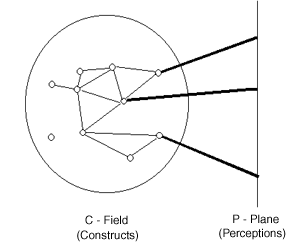

The physicist and natural philosopher Henry Margenau described physical reality by means of diagrams like the one below.

The P-plane on the right represents the phenomena and our perceptions of them. E.g., we see the sky blue at times and the sun red, and we see the sun moving through the sky in the course of a day. These are perceptions from the P-plane. "P" stands for "perceptions" or "phenomena".
Physicists make abstract models in order to organize and predict the happenings on the P-plane. These models form the C-field. The models employ constructs or concepts. Therefore the name "C-field". The constructs are connected among each other to form a network. The layperson too works with a C-field to order his or her experiences of physical nature, but this C-field is different from the one that has been developed by physicists. This is one main reason why physics is difficult, but exciting to learn. (Another difficulty is the mathematical nature of the C-field of physicists.) It is never easy to change one's pattern of thinking, but it is exciting to experience new ways of looking at things.
Having to change one's pattern of thinking applies to beginning students of physics and experienced physicists alike. The reason is that physics is constantly changing, sometimes rather abruptly. The models created by physicists to understand nature do not last forever, but evolve or sometimes are replaced entirely. This is in order to accommodate new experimental discoveries or to achieve a simplification in one's understanding.
Thus, the models of physics have a limited life. They are also limited in their range of applicability. These limitations make room for the creative process. The creative process in physics is guided by similar considerations as the creative process in art: beauty, simplicity, structure, to name only a few.
Some of the constructs in the C-field are connected to elements of the P-plane. This map of the C-field onto the P-plane allows us to "explain" the observations in the P-plane in terms of the C-plane model. It is via the C-field that two observations in different parts of the P-plane can be linked: each observation is linked to constructs in the C-field and these are linked within the C-field to each other. For example, the blue color of the sky can be linked to wireless radio reception. These two phenomena seem unrelated on the P-plane. However, they are related through Maxwell's theory of electromagnetism (plus other theoretical developments): blue light is an electromagnetic wave, and so are radio waves. Only the wave lengths are different.
Notice that the C-field contains deeper lying constructs not directly connected to the P-plane. They don't have a direct intuitive interpretation, but are essential elements of the model, i.e., theory.
Physics constructs tend to be expressed mathematically. Already Galileo, about 400 years ago, said that mathematics is the language of physics. The mathematical approach has been extremely succesful in modeling the natural world, surprisingly so, and has made it possible to make very accurate quantitative predictions. E.g., we can predict to a minute that there will be an eclipse of the sun hundreds of years from now.
Even introductory physics courses require a certain amount of mathematics, and being comfortable with this mathematics will certainly make learning the physics easier. MAP reviews and provides exercises on some of this mathematics in the section titled "Mathematics".